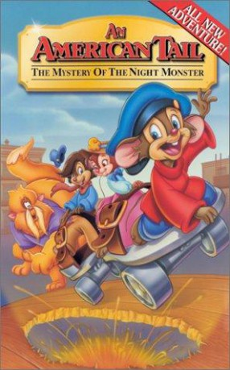

#1285 Feivel, der Mauswanderer 4 - Das Ungeheuer von Manhattan Island
Alternativ: An American Tail: The Mystery of the Night Monster
 
 IMDB-Wertung: 6.1 / 10
IMDB-Wertung: 6.1 / 10  Metascore: 0
Metascore: 0 
Follow the clues to fun and excitement as the beloved little mouse takes on a big monster in this charming, full-length adventure. When a ferocious, mouse-nabbing creature puts fear into the hearts of New York City's rodents, Fievel and his friends team up with a reporter to chase after the scoop of the century and -- just maybe -- get a close-up look at the bad guy himself! Featuring three original songs and the voice talents of Dom DeLuise, Lacey Chabert and Robert Hays, An American Tail: The Mystery of the Night Monster is a mischievous, musical good time that the whole family will enjoy!
Jahr: 1999
Dauer: 78 Minuten
FSK: 0
Land: USA Studio: CIC VídeoTonspuren:
Untertitel:
Auflösung: SD (576x432) Größe: 699 MB
Genre: Animation/Trick, Abenteuer, Familie, Mystery
Regisseur: Larry Latham
Drehbuch: David Kirschner, Len Uhley
Soundtrack: Michael Tavera
Darsteller:
Datei: X:\Kinder Collections\Feivel, der Mauswanderer\Feivel, der Mauswanderer 4 - Das Ungeheuer von Manhattan Island (1999, FSKo.Al., 576x432).avi seit 16.06.2015
Festplatte: Kinder-Filme+Trick
 Es gibt insgesamt 7 Filme in der Gruppe 'Kinder Collections\Feivel, der Mauswanderer'
Es gibt insgesamt 7 Filme in der Gruppe 'Kinder Collections\Feivel, der Mauswanderer'